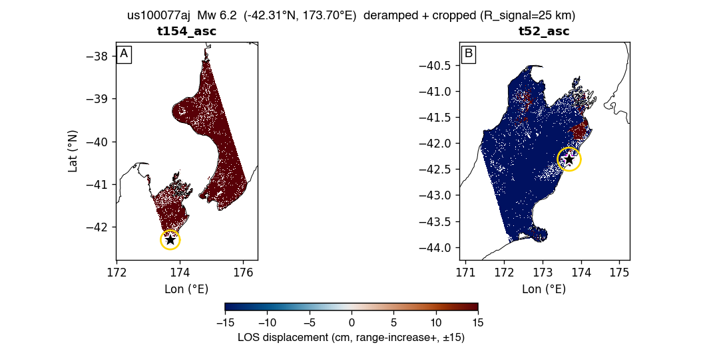

us100077aj — Mw 6.2 — GBIS report
Event: 90 km SSW of Blenheim, New Zealand · (-42.309°N, 173.696°E, depth 2.09 km)
USGS NP1: strike 243.0° / dip 78.0° / rake 166.0°
USGS NP2: strike 336.0° / dip 76.0° / rake 13.0°
Status: ESCALATED at stage ? — gbis_single_los_pattern_D. Sections below show whatever the pipeline produced before it stopped; the rest are left blank. See §3 / escalation.md.
1. Raw observations (deramped + cropped)

2. Two-round iterative downsampling (Pass-1 zoned → Pass-2 synth-quadtree)
No subsample_v9_zoned.mat found — run Stage 4 (qsRunFullEvent) first.
3. GBIS inversion result — posterior + diagnostics
| parameter | posterior median | p16 .. p84 | prior bound | USGS NP1 |
|---|
| L (km) | 0.02 | 23.09 .. 23.13 | 6.61 .. 23.13 | — |
| W (km) | 0.01 | 13.17 .. 13.19 | 3.77 .. 13.19 | — |
| Z_top (km) | 0.00 | 0.10 .. 0.10 | 0.10 .. 30.00 | — |
| dip (°) | -58.0 | 43.5 .. 61.7 | 43.0 .. 113.0 | 78.0 |
| strike (°) | 49.0 | 228.3 .. 229.5 | 183.0 .. 303.0 | 243.0 |
| X (km) | 0.00 | 1.86 .. 2.30 | -25.00 .. 25.00 | — |
| Y (km) | -0.00 | -3.39 .. -2.92 | -25.00 .. 25.00 | — |
| SS (m) | +0.778 | -0.780 .. -0.528 | -2.000 .. +2.000 | — |
| DS (m) | +0.857 | -1.248 .. -0.448 | -2.000 .. +2.000 | — |
| |slip| (m) | 1.157 | | — |
| rake (°) | -132.2 | | 166.0 |
| Mw | 6.61 ± 0.10 | | 6.2 |
USGS-convention values shown (dip>0, strike, rake). Red row = posterior median within 2% of a prior bound (railed).
诊断结论: FAIL
acceptance 0.23 (target 0.20–0.45) · ESS 100 (≥500) · Geweke |z| 79.8 (≤2)
VR per track: t154_asc 0.00 · t52_asc 0.01 (≥0.50)
未通过项: ESS; stationarity (Geweke); param-at-bound: L,W,Z_top; VR
4. Beachball comparison
⏳ Not generated — needs the full-mode figure helper. the beachball (full-mode figure helper).
5. Triplet — data / model / residual
⏳ Not generated — needs the full-mode figure helper. the data/model/residual triplet (full-mode figure helper).
6. Joint-posterior corner plot
⏳ Not generated — needs the full-mode figure helper. the corner plot (full-mode figure helper).
7. Burn-in / chain trace
⏳ Not generated — needs the full-mode figure helper. the chain trace (full-mode figure helper).
8. Agent Review (LLM advisory)
Rating: ?
· LLM advisor not invoked
Recommendation: manual_review
Confidence: low
Concerns:- ANTHROPIC_API_KEY not set — to enable LLM advisory, export ANTHROPIC_API_KEY and re-run
Rationale: ANTHROPIC_API_KEY not set — to enable LLM advisory, export ANTHROPIC_API_KEY and re-run
Advisory only. Generated by claude ?
(0 tokens) — not used to drive pipeline actions.